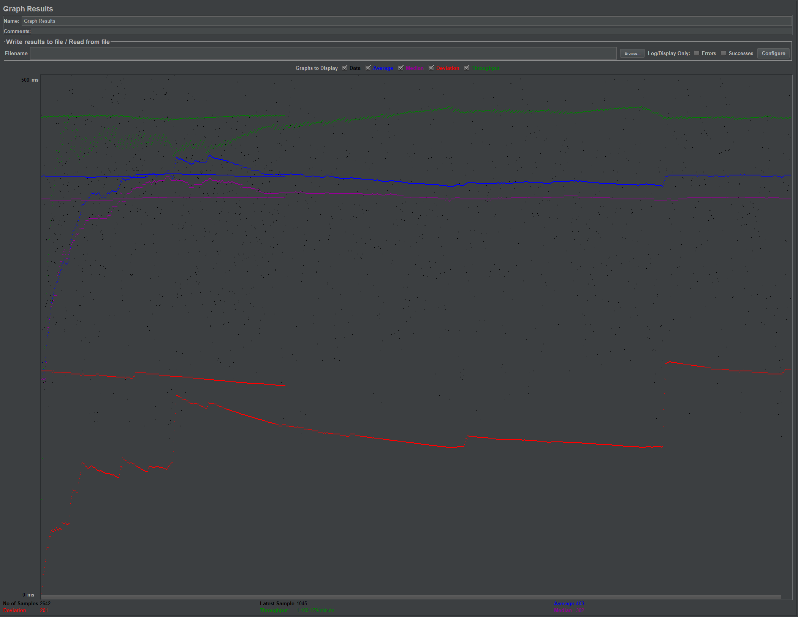
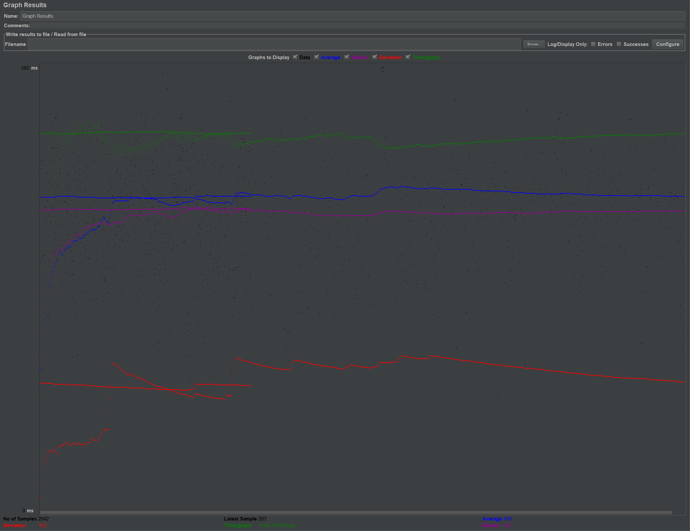
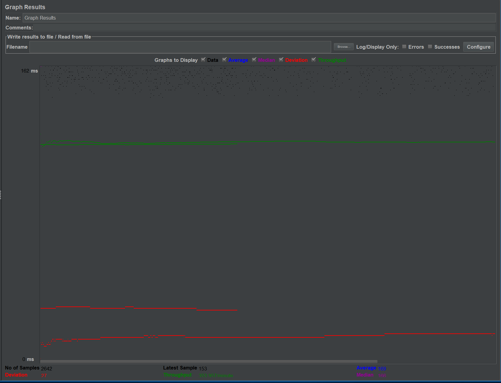
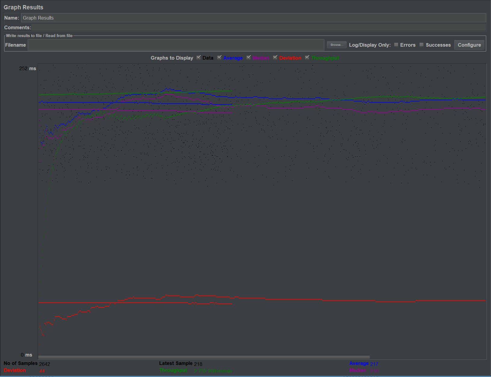
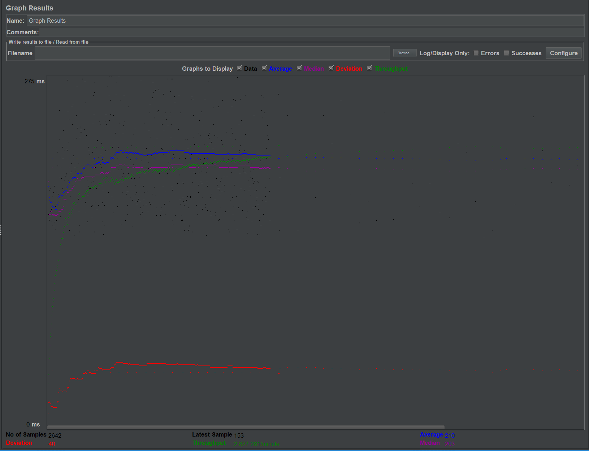

| Single-instance version cases |
Graph Results Screenshot |
Average Query Time(ms) |
Average Search Servlet Time(ms) |
Average JDBC Time(ms) |
Analysis |
| Case 1: HTTP/1 thread |
|
175.00ms |
35.90ms |
35.61ms |
This is regular one-user accessing our website, sending the query to the single instance |
| Case 2: HTTP/10 threads |
 |
403.00ms |
226.56ms |
225.00ms |
This is 10-users accessing our website at the same time, sending the query to single instance.
You can see, as the loading increasing, Average query time, JDBC time and Servlet time increase because too many traffic on the server.
|
| Case 3: HTTPS/10 threads |
|
689.00ms |
167.09ms |
165.07ms |
This is 10-users accessing our website at the same time, sending the query to single instance, but using a https protocol.
You can see, compared to case 2, the average query time increase because it takes more time to encrypt all the information.
However, the TJ and TS are faster than http request. Then I google this result, here is what I got from google, which might can explain this.
"Therefore, HTTPS is almost always going to be faster than HTTP simply due to the different protocol it generally uses. However, if HTTP over HTTP/1.1 is compared with HTTPS over HTTP/1.1, then HTTP is slightly faster, on average, than HTTPS" |
| Case 4: HTTP/10 threads/No prepared statements |
 |
409.00ms |
229.59ms |
228.11ms |
As expected, prepared statement do increase the performance of the website. But from the results we can not see too much improvement,
TJ, TS and average query time increase a little bit compared to case 2.
But in this case, we only send 10 users to access our website. So the improvement could be more if the number of users increase.
|
| Case 5: HTTP/10 threads/No connection pooling |
|
409.00ms |
228.93ms |
227.59ms |
As expected, enable connection pooling do increase the performance of the website. From the results not too much improvement,
TJ, TS and average query time increase a little bit compared to case 2.
But in this case, we only send 10 users to access our website. So the improvement could be more if the number of users increase.
|
| Scaled version cases |
Graph Results Screenshot |
Average Query Time(ms) |
Average Search Servlet Time(ms) |
Average JDBC Time(ms) |
Analysis |
| Case 1: HTTP/1 thread |
 |
169.00ms |
36.83ms |
36.35ms |
This is regular one-user accessing our website, sending the query to scaled version by using a load balancer.
Compared to single instance(one user), as expected, TJ,TS doesnt change because load balancer doesnt change anything about the
connection to the database. Also, average query time become faster, which makes sense. I think it is because the load balcnce
balance the requests and send them to two instance equally. That reduces the traffic in the server side and improve the performance.
|
| Case 2: HTTP/10 threads |
 |
217.00ms |
83.93ms |
83.23ms |
This is regular 10-user at the same time accessing our website, sending the query to scaled version by using a load balancer.
Compared to scaled version case 1, as expected, as the loading increasing, Average query time, JDBC time and Servlet time
increase because too many traffic on the server. |
| Case 3: HTTP/10 threads/No prepared statements |
 |
217.00ms |
83.74ms |
82.87ms |
Not As expected, prepared statement does not really change anything. TJ, TS and average query time stay the same.
But in this case, we only send 10 users to access our website. So the improvement maybe more obvious if the number of users increase.
|
| Case 4: HTTP/10 threads/No connection pooling |
 |
210.00ms |
80.13ms |
79.65ms |
Not As expected, connection pooling even make the performance worse in the scaled version. TJ, TS and average query time become slower
compared to case 2 scaled version. I have a wild guess of this result. I think maybe because in the scaled version, I create two connection
pooling, one for read request and the other for write request. So every time sending query to server, server has to know which connection
pooling goes. That going to take some extra time and that explain why for single instance version the connection pooling does improve
the website. However, when it comes to scaled version, it even make the website slower because it takes extra time to find which pooling is the
right one. |